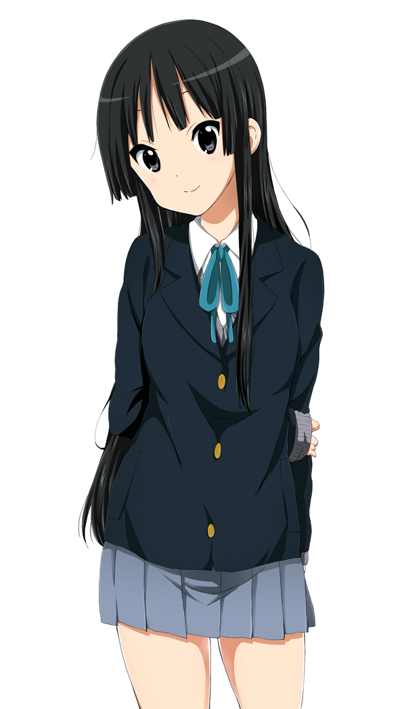
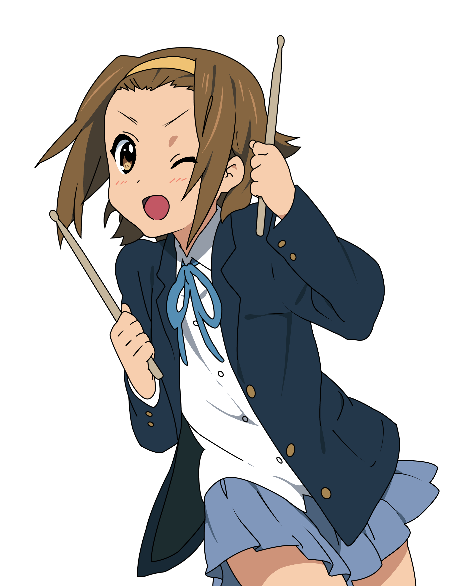
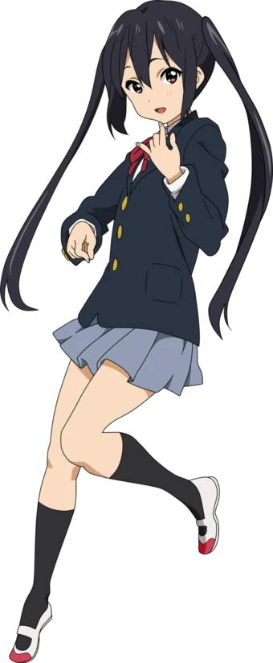

Characters
HO-KAGO TEA TIME
Yui Hirasawa
Yui Hirasawa (平沢ひらさわ 唯ゆい) is one of the 5 main characters in K-ON!. She's also the main protagonist. She is the air-headed lead guitarist and vocalist of the band Ho-kago Tea Time.
Character
Always looking for fun, Yui is fearless; anxiety and stage fright are unknown to her. She likes everything cute and makes a lot of physical contact with others like holding hands or hugging. She also loves everything sweet, so she's energized by the sweets that Tsumugi brings and her physical constitution is such that she does not gain weight no matter how much she eats. She can't stand being hot or cold, so she spends the winter under the kotatsu and rolls around on the floor in the summer in front of the fan to keep cool. Yui is rather lazy, so her grades with the exception of fine arts are always on the verge of failing; sometimes she is the only person in her class who needs to retake a test, while other times she manages to avoid failing all of her subjects by a one point margin. She has an average figure. Yui lives in a family of four with her younger sister Ui and both parents. Her parents are a "lovey-dovey" couple and often go on trips together, leaving both daughters behind.
Having misunderstood that "light music" means "easy music" (like whistling), Yui joined the Light Music Club and picked up the guitar with absolutely no prior experience. She cannot do more than one thing at a time, but to make up for that she can be highly focused on a particular subject and once started, can advance quite rapidly. However, whenever she learns something, she tends to forget everything else. Yui is the type of person who doesn't read manuals and relies on her own intuition and self-taught approaches. She also does not remember any musical terminology. She possesses perfect pitch and is musically gifted, being able to tune her guitar without a tuner, but she does not appear to make the best of her ability. Yui is relatively determined and competitive, but at the same time she feels comfortable depending on the help of a few good friends like Ui, Nodoka, Mio and Azusa.
Mio Akiyama
Mio Akiyama (秋山アキーヤマ 澪ミオ) is one of the 5 main characters in K-ON! She is a passionate and technical left-handed musician and writer who serves as the bassist, second vocalist and main lyricist of the band Ho-kago Tea Time. She is a kind and warm girl, albeit very shy and sensitive. Despite her timid streak she often finds herself as the voice of reason amongst her bandmates, who often rely on her sensibility when in trouble. .
Character
Mio is very reserved and bashful by nature. She is private and soft-spoken, even amongst close friends, and seems to enjoy time alone, which she often dedicates to songwriting. She has been socially anxious and self-conscious since she was small, hence falling prey to a young Ritsu's teasing, and typically retreated into the sanctuary of her books. She struggles to interact with strangers, has few friends outside the Light Music Club (despite her popularity), and is strikingly sensitive to attention from others. She also embarrasses very easily and does not easily live down mortifying moments. Her bandmates' antics and jokes are hence often at her expense. Mio specifically chose the bass guitar as her instrument because it is not as conspicuous as the guitar.
Mio is warm-hearted and in touch with her and others' emotions, possessing a very sensitive side that reveals itself more than she would like. Her kindness and empathy is possibly best demonstrated in her sister-like treatment of Azusa. She even has a heart to heart with the band's new recruit, who she hardly knew at the time, hoping to make her feel welcomed. Mio is very aware and expressive of her feelings, though not always intentionally, be it her appreciation of her friends or her passion for the bass guitar. She is also the first to shed tears following their final school festival concert. She also seems to have a knack for offering her friends comforting words when they are distressed, particularly when it comes to Ritsu. Mio's softer side comes out in her, at times peculiar, writing and lyrics, which often feature cutesy and overly girlish themes and lines. Her weakness is the macabre and horrific, and she can be incapacitated with fear by stories involving the supernatural, horror, and gore. She also has trypophobia, an irrational fear of collections of small holes.
Mio is diligent, responsible, and sober, especially when contrasted with her happy-go-lucky bandmates. She is academically inclined, always ranking within the top 10 students of her grade, and a keen reader and writer. She is a very dedicated musician and is technically advanced at the bass guitar. She is very driven when it comes to the Light Music Club and, in her own words, is committed to the club as if it were her boyfriend. She even takes over lead vocals from Yui when she needs to, despite strongly preferring to solely play bass. Her bandmates often turn to her when faced with academic troubles or when curious about musical technique.
Throughout high school, Mio gradually comes to grips with her anxieties and insecurities. She establishes herself as the voice of reason amongst her bandmates when their carefree ways get the better of them and becomes the most vocal about the band's direction and motivation. She comes into her own as a musician and composer, stepping up as the band's main songwriter and embracing the dual roles of bass and vocals despite her fear of standing in the spotlight. She also becomes more comfortable on stage and more open to the attention that may come with it. Understanding Azusa's reservations about the Light Music Club, Mio was the first to open up to her, convinces her to remain in the club, and stands up for Azusa's ambitions to her fellow bandmates. Mio even finds herself acting like an older sister figure to Azusa.
During her final year of high school, Mio begins to loosen up more, concentrate on the present, and give in to the hijinks of her friends, which she previously viewed as immature. She comes to appreciate the affection of others, such as that of her fan club, although it still leaves her flustered. Mio starts to consider coming of age and the ephemerality of her high school years more than any of her bandmates. She embraces events such as the summer rock music festival to an extent that even surprises Ritsu and voices an almost childish wish to keep playing with the band forever. She even chooses to take a large step outside of her comfort zone in performing a lead role in the school play, albeit with initial difficulties. After contemplating hard about what she values and wants, with university entrance exams approaching fast, Mio resolves that her friendships with Ritsu, Yui, and Tsumugi are too dear to risk. She boldly turns down a distinguished recommendation for a university to apply to the same women's university as her bandmates, in hopes of spending her university years alongside those that matter most to her.
Ritsu Tainaka
Ritsu Tainaka (田井中たいなか 律りつ), called Ricchan (りっちゃん Ricchan) by Tsumugi Kotobuki and Yui Hirasawa, is one of the 5 main characters in K-ON!. She is the self-appointed president of the Light Music Club and the drummer of the band Ho-kago Tea Time. She was the one who rebooted the Light Music Club when it was on the verge of being disbanded and has become the natural leader of the club since then.
Character
Ritsu is the source of fun and encouragement in her band, often making jokes, puns, or pranks and being sarcastic much of the time. She has an upbeat yet carefree personality and often has trouble remembering important club activities and announcements. Because of that, she constantly gets whacked by her childhood friend Mio Akiyama. Despite her forgetfulness, she usually brainstorms for ideas to earn more money or for the club's success in general (like blackmailing Sawako Yamanaka to become the club's supervisor). Her attitude of collecting as much money as possible lets her sometimes appear greedy, something she greatly dislikes. Ritsu is always on the go and will stop at nothing for the success of the Light Music Club, even when everyone else gives up.
Ritsu is very barefaced, sometimes audacious, or even impudent, yet she rarely has ill intentions and usually apologizes the moment after she goes too far. On the other hand, her personality has led to her building up a large endurance to Mio smacking her, the bassist being the least tolerant of Ritsu's antics.
From time to time, Ritsu has been shown to be rather lazy as well. When it comes to practicing, she only thinks of having fun with her bandmates (such as having so many tea breaks that they almost drove Azusa Nakano away). During training camps, Ritsu usually votes to play around first the moment they arrive and is often supported by Yui Hirasawa. She is usually too lazy to study and often needs Mio's help (though because of that, she actually scores good marks). On very few occasions, when the pressure is too high, she tends to give up on studying and needs the help of her friends to continue. When she becomes determined, however, she can get her work done in no time. Such determination can be seen in her diligent studying to pass her entrance exam to enter her university of choice so she can study together with her friends. She also loves playing her drums despite being hardly ever willing to practice seriously.
Ritsu has a liking for the band The Who and admires their drummer, Keith Moon, although she dislikes his various past rampages. When it comes to music, Ritsu prefers rock. She also likes metal or punk; as long as it has a good beat, it's alright.
Ritsu is very athletic and is in by far the best physical condition of all members of the Light Music Club. Physical Education is the only subject she is naturally good at.
Ritsu has a strong sense of confidence from an unknown source, although her confidence has led to plenty of the club's problems, such as losing their way in the middle of Kyōto. One of her habits is putting both arms at the back of her head, usually to an annoying effect. She is also very curious and therefore knowledgeable of many places to have fun at, a fact her friend Tsumugi Kotobuki admires. Tsumugi has also described her as the type of person who walks the extra mile for her friends and who would be really popular among girls if she would be a boy (which led Ritsu to hit her out of embarrassment).
Ritsu prefers to put up a tough front and doesn't cry easily. Her weak spot is seeing her friends cry, though even then she'll deny that she's crying with them and try to cheer them up, despite her true feelings being obvious.
Ritsu is a surprisingly good cook and is also very easygoing, using a hexagonal pen in exams to determine the answer she should choose. In stressful situations, however, she quickly loses her head and tries desperate attempts to save the situation that tend to make things worse.
Although she usually acts boyish and childish, she sometimes shows a girly and shy side. For example, when she mistook lyrics Mio had put in her mailbox to be a love letter for her or when she had to play the role of Juliet in her class' school play.
When Ritsu gets in a bad mood, she tends to drag the atmosphere of the club down with her. An example would be her jealous side, which she shows when she thinks Mio is ignoring her and spending more time with Nodoka Manabe. Despite her mostly immature behavior, she has enough common sense to keep her bandmates focused when they need to be, especially when her unreliable teacher Sawako is around.
Tsumugi Kotobuki
Tsumugi Kotobuki (琴吹ことぶき 紬つむぎ Kotobuki Tsumugi), otherwise known as Mugi (むぎ) is one of the 5 main characters in K-ON! She is a wealthy, cheery, cute girl with a gentle personality who plays the keyboard and is the main musical composer in the band Ho-kago Tea Time.
Character
Tsumugi is the keyboardist of Ho-kago Tea Time. She is a wealthy girl who has a sweet and gentle personality. She has been considered a piano prodigy since she was four, and has won many piano recital contests. As the daughter of a company president, Tsumugi and her family own several villas in various places around Japan (and even one in Finland, much to Ritsu, Azusa and Ui's surprise when they tried to contact her at home). She often brings sweets and confectioneries to her friends, which usually ends up distracting them from practicing. The tea set and the tea which they drink often are unusually high in price. Although she is a sweet and gentle girl, she is often entranced by the sight of two girls interacting closely together, sometimes imagining something more risque. She originally intended to join the choir club, but after Ritsu's false flashback of promising to start a band and seeing Ritsu and Mio's silly interaction, she decided to join the Light Music Club instead.
Tsumugi displays a rebellious streak occasionally, due to her wanting to deviate from her wealthy nature, and diverts from a well-behaved and mature demeanor to the surprise of others. She also has a habit of getting a little too enthusiastic about experiencing new things that the others take for granted (such as ordering fast food, eating yakisoba at a festival, and purposely provoking Mio to hit her) since she has little opportunity to experience them with her high status.
Despite being wealthy, she tried her hand at a part-time job at a fast-food restaurant. While a lot of things do not bother her, she is fairly conscious about her weight (just like Mio), and she gets a bit anxious when her family's staff start spoiling her friends during villa visits.
Another characteristic that distinguishes Tsumugi from most girls her age is her surprisingly prodigious physical strength. Her astounding feats of strength include rapidly carrying various pieces of Ritsu's drum set, one by one, with seemingly little effort and even humming a happy tune throughout; abruptly defeating the arm wrestling machine on maximum setting at the Game Centre, which Ritsu had painfully struggled against; and sending Akira flying into a wall with a "light" slap. Furthermore, she regularly runs a brisk jog with her instrument, the Korg Triton Synthesizer, slung across her shoulder. (The Korg Triton is a hefty piece of equipment: at seventeen kilograms, its weight is comparable to that of a FIM-92 Stinger Missile or FGM-148 Javelin Missile Launcher.) Additionally, she did not tire or slow down while dragging thirty kilograms of luggage and carrying her Triton Synthesiser over her shoulder as the band was running to catch a Taxi to London Heathrow Airport.
Azusa Nakano
Azusa Nakano (中野なかの 梓あずさ Nakano Azusa), nicknamed "Azu-nyan" (あずにゃん) by Yui Hirasawa, is one of the 5 main characters in K-ON! She is a student at Sakuragaoka High School. She decided to join the Light Music Club after seeing the band's performance in the school festival and thus became Ho-kago Tea Time's second guitarist. After the senior members graduated, she continued the club and became its new president. She became the main guitarist and main vocalist of the new band, Wakaba Girls.
Character
Azusa is a self-proclaimed novice guitarist who has been playing the guitar since she was in fourth grade because her parents play in a jazz band. Despite her low self-esteem and modest attitude, she is extremely talented and superior to her senior, Yui Hirasawa, who also plays guitar.
Since she expected the Light Music Club to be a serious club with ambitious members, she is often disappointed by the laziness around her. Shortly after joining, her disappointment made her go as far as having a rage attack during a club meeting and considering leaving the club to join other bands. Azusa is then comforted by Yui and gets encouragement from her senior, Mio Akiyama, removed her last doubts and she joined the club for real, although she still often nags about the club's lack of activities. When doing so, she can be quite serious and blunt.
Over time, she slowly became used to the club's slow pace and often gets teased because of it. She has a certain weakness for sweets and can be calmed down rather easily, sometimes just from being petted. Every now and then, she is shocked about how quick she got used to the club's laziness and tries to change it.
Azusa is easily overwhelmed by good musical performances, seen when she first watches the Light Music Club's concert or Sawako Yamanaka's performance speechlessly. She also gets a tan very easily, seen twice during a trip to the beach and also once during a music festival (even after applying sunscreen). The manga shows that she tans in mere seconds. She often suffers from this, examples being not being able to take a bath due to the sunburn, not being recognized by friends due to her drastic change in appearance or needing to hide the tan lines by wearing a longer skirt at school.
Azusa is in some ways similar to Mio. Both can get embarrassed, are shy (like when Sawako brings in new costumes), and they're the only ones who are assiduous and anxious to move the band to practice. They also look and sort of act as if they were sisters.
Azusa is also very smart and structured. She once created a strict daily plan for Yui to study for finals and also organized the band's graduation trip to London. She told Mio once that she loves planning things.
Although she mostly appears to be calm-natured, she also has an eruptive nature and snaps easily when someone makes fun of her. She can also be pretty stubborn to show no weaknesses. By the time she became the president of the Light Music Club, she also became rather bold, especially against the supervisor Sawako.
Azusa is often hugged or otherwise physically contacted by Yui (and less often, Ritsu), who considers Azusa cute due to her small size. Yui gave Azusa the nickname "Azu-Nyan" after Sawako made Azusa put on cat ears.
Azusa can't stand being lonely. At the graduation of the original club members, she begged them under tears to not graduate before her since she didn't want to be lonely, despite knowing her request was selfish and immature but very innocent.
Azusa has a very thoughtful side and often worries with herself being capable of being good enough at the guitar or being a good president for the Light Music Club. However, she does not let her personal worries bother her in times where her leadership is needed and she does all in her might to help her friends out, so in the end, she quickly became just the kind of president her underclassmen needed.
The anime shows that Azusa is very fond of animals, yet she is distanced or even nervous in front of them at first.
Azusa can be considered to be a tsundere since she tries to hide her feelings for Yui with shyness and easily gets embarrassed when she is pet, hugged or otherwise teased by her.
Also, while nowhere as strong as Tsumugi, Azusa still possesses remarkable physical strength for her size, being able to drag a crying and screaming Yui (6 centimeters taller and 4 kilograms heavier than she is) behind her back to study for her remedial exams with one hand.
Ho-Kago Tea Time

The five Sakuragaoka High School students Yui Hirasawa, Mio Akiyama, Ritsu Tainaka, Tsumugi Kotobuki and Azusa Nakano had already been members of their school's Light Music Club for a reasonably long time when the first questions about forming an independent band appeared. The idea was to gather together to play music while out of school. The only real problem was to find a name for the band. After endless and fruitless discussion, the club's adviser Sawako Yamanaka, irritated, gave the band its current name, Ho-kago Tea Time, which is an allusion to the main activities in the Light Music Club - gathering together to drink tea after school has ended. The members, although disappointed about not being able to decide the name on their own, accepted it willingly.
For the next several concerts, rather than performing as the Light Music Club, they referred to themselves as Ho-kago Tea Time. Together, they experienced many events like visiting the "Natsu Rock Fest", performing alongside the band Death Devil or even in London at a "Japanese Culture Festival". As the third year of the four seniors came to an end however, the band had to split. While Azusa stayed behind to form her own band, Wakaba Girls, out of the new cast of the Light Music Club, the four seniors Yui, Mio, Ritsu and Tsumugi started to attend the J. Women's university where they continued Ho-kago Tea Time without Azusa. Eventually, the band joined the university's Light Music Club where they started a friendly rivalry with the band Onna Gumi.
Music Profile
Band Line Up
Yui Hirasawa - Lead Guitar, Rhythm Guitar, Lead Vocals, Backing Vocals
Mio Akiyama - Bass, Lead Vocals, Backing Vocals
Ritsu Tainaka - Drums, Backing Vocals
Tsumugi Kotobuki - Keyboard, Backing Vocals, Lead Vocals (one song)
Azusa Nakano - Rhythm Guitar, Backing Vocals, Lead Guitar, Lead Vocals (alongside Yui, one show)
Sawako Yamanaka - Rhythm Guitar (guest, one show)
Aside from the task of playing an instrument, Mio and Tsumugi both have organizational roles in the band as well. Mio is the band's lyric writer and Tsumugi is the musical composer. After the oldest four members of the band graduated, HTT returned to the four member line-up it originally had during the first year at the Light Music Club.
Style
Ho-kago Tea Time's sound is a blend of Rock & Roll, Power Pop, Pop Punk, Hard Rock, and similar subgenres of Rock, with more subtle elements of Jazz and other music genres as well. The band's heavier Rock-type sound somewhat contrasts with their lyrics, which are mostly focused on sweets, tea, or similarly lighthearted themes. Notes in the manga's official translation refer to the band as Pop Punk, which is an accurate, though simplistic description, given the variety of influences that come from the band's members. Due to each member playing their own style from their own influences rather than the band having the same style for all instruments, the band is hard to categorize into a single genre. This also means each instrument is always musically distinct and are usually all playing something unique. The short riffs that play over every season 2 episode title are excellent examples of Ho-kago Tea Time's musical style and instrumental diversity.